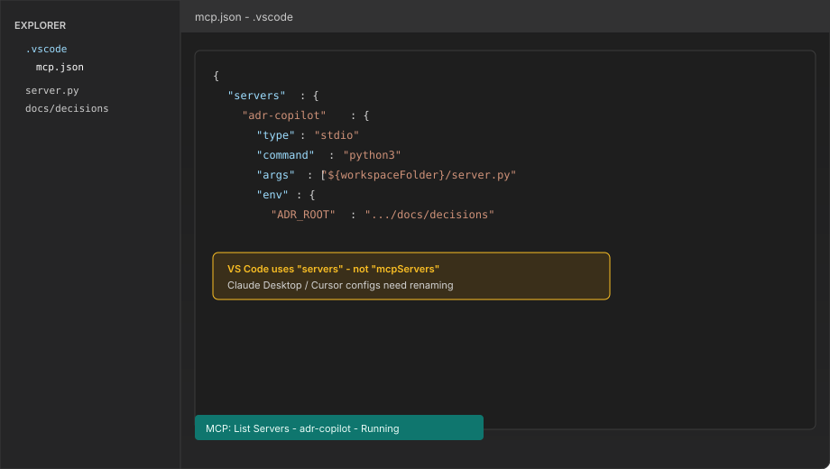
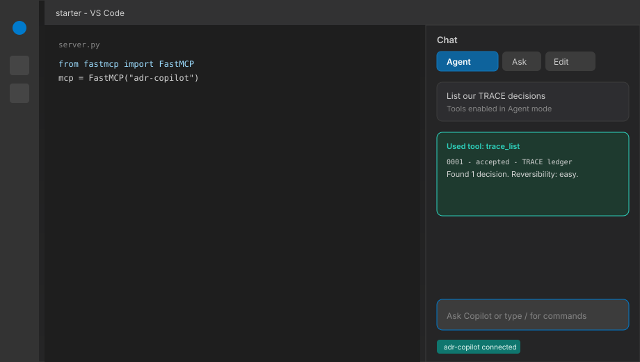
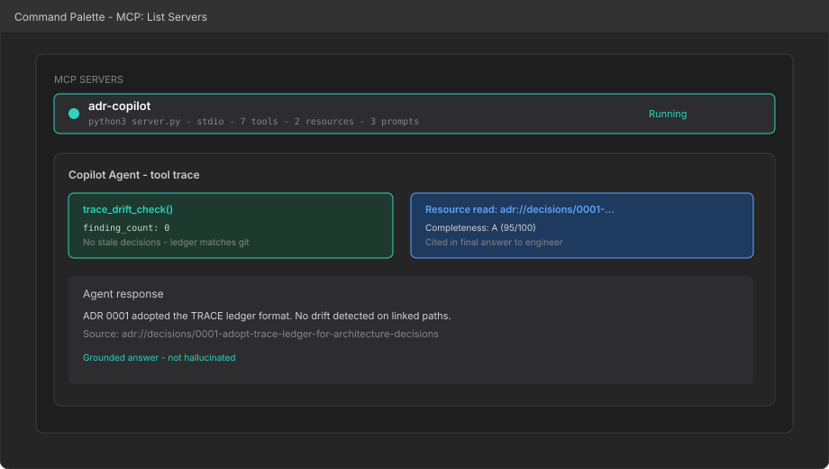

🎯 What we are building
By the end of this tutorial you will have a working ADR Copilot MCP — a small Python server that sits between VS Code Copilot and your team's architecture decision records. When someone asks "why did we choose Kafka here?" or "what happens if we roll this back?", the agent pulls a real decision from the ledger instead of guessing from file names.
What is an ADR?
An Architecture Decision Record (ADR) is a short, durable write-up of a significant technical choice: what you decided, what you rejected, and why it mattered at the time. The idea was popularized by Michael Nygard — one decision per document, stored in version control alongside the code it affects.
Think of ADRs as commit messages for architecture. A git commit explains what changed in a diff. An ADR explains what changed in your thinking — and that context often outlives the people who made the call.
How teams actually lose context
- "We always used Postgres" — nobody remembers the incident that drove it
- Critical context lives in a merged PR from 2022, buried in 400 comments
- New hires ship changes that violate a constraint nobody documented
- Copilot invents plausible-sounding history because it has no source of truth
What good looks like
- Decision
0042: "Use Kafka for cross-service events" — status, date, owner - Alternatives section records why RabbitMQ and SQS were rejected
linked_pathspoint at the files that implement the decision- Agents and humans cite the same document in review and onboarding
A typical ADR answers four questions in plain language:
- Context — what situation forced a choice? (scaling pain, compliance, deadline)
- Decision — what did we pick?
- Alternatives — what else did we consider and rule out?
- Consequences — what gets easier, harder, or riskier because of this?
ADRs are intentionally lightweight. They are not design specs, RFC novels, or Confluence pages that rot in a sidebar.
Most teams keep them as markdown in docs/decisions/ or adr/ and number them sequentially: 0001, 0002, and so on.
Why put ADRs behind MCP?
Markdown in a folder is great for humans who know where to look. It is invisible to a coding agent unless you wire it in. Model Context Protocol (MCP) is the standard way to expose tools and readable resources to LLM clients — including VS Code Copilot in Agent mode.
ADR Copilot MCP bridges that gap:
- Tools —
trace_list,trace_draft,trace_drift_checklet the agent query and update the ledger - Resources —
adr://decisions/0042-use-kafkagives the full record as citable context - Prompts —
red_team_adrruns a structured review before you mark a decision accepted
We use a TRACE variant of the classic ADR format (Trigger, Reversibility, Alternatives, Consequences, Evidence) with extra machine-readable fields — status, reversibility, linked_paths — so the server can score completeness and detect when code has moved on but the doc has not.
Concrete example
Your team adopted Redis for job timers because Postgres polling blew the scheduler p99 budget. Six months later, a junior engineer asks Copilot to "replace Redis with in-memory timers for simplicity."
Without ADR Copilot: the agent may agree — it sees timer code and no written constraint.
With ADR Copilot: the agent calls trace_get("0017"), reads that the decision is irreversible at current scale, cites the Evidence section (p99 dropped from 1.2s to 180ms), and suggests a new ADR if requirements truly changed.
Fig 01 — End-to-end flow
flowchart LR
Dev["Engineer"] --> VS["VS Code Agent"]
VS --> MCP["FastMCP server.py"]
MCP --> FS["docs/decisions/*.md"]
MCP --> Git["git log drift check"]
MCP --> VS
VS --> Dev
- Python 3.10+ and
pip - VS Code with GitHub Copilot
- Copilot Chat → Agent mode (not Ask)
- Optional: git repo for drift detection
Step 1 — Project setup
All tutorial code lives in the starter kit. Open this folder as your VS Code workspace root:
topics/ai/build-adr-copilot-mcp/starter/From the repo root, set up the environment:
cd topics/ai/build-adr-copilot-mcp/starter
python3 -m venv .venv
source .venv/bin/activate # Windows: .venv\Scripts\activate
pip install fastmcp pyyamlstarter/
Where each file goes
| File | Path (from starter/) |
|---|---|
requirements.txt | requirements.txt |
trace_schema.py | trace_schema.py |
adr_store.py | adr_store.py |
graph.py | graph.py |
scoring.py | scoring.py |
server.py | server.py |
mcp.json | .vscode/mcp.json |
| Decision ledger | docs/decisions/*.md |
From the blog article page, the same folder is starter/. From the repo root, use topics/ai/build-adr-copilot-mcp/starter/.
Save dependencies for teammates:
# starter/requirements.txt
fastmcp>=2.10.0
pyyaml>=6.0.2Create the ledger directory:
mkdir -p docs/decisions
The starter kit ships with one sample decision file you can open and copy from:
starter/docs/decisions/0001-adopt-trace-ledger-for-architecture-decisions.md.
It is a real TRACE record (YAML frontmatter + five sections) — ADR 0001, status accepted — not a placeholder link.
Step 2 — TRACE schema
Before MCP wiring, define what a decision is. We use five body sections — Trigger, Reversibility, Alternatives, Consequences, Evidence — plus YAML frontmatter the tools can parse.
Create this file (complete — nothing omitted):
Path: starter/trace_schema.py (or trace_schema.py if starter/ is your workspace root)
"""TRACE decision record schema — frontmatter fields and section headings."""
from __future__ import annotations
from dataclasses import dataclass, field
from typing import Literal
AdrStatus = Literal["proposed", "accepted", "deprecated", "superseded"]
Reversibility = Literal["easy", "moderate", "hard", "irreversible"]
TRACE_SECTIONS: tuple<str, ...> = (
"Trigger",
"Reversibility notes",
"Alternatives considered",
"Consequences",
"Evidence",
)
@dataclass
class TraceFrontmatter:
id: str
title: str
status: AdrStatus = "proposed"
created: str = ""
updated: str | None = None
authors: list<str> = field(default_factory=list)
reversibility: Reversibility = "moderate"
supersedes: str | None = None
superseded_by: str | None = None
relates_to: list<str> = field(default_factory=list)
linked_paths: list<str> = field(default_factory=list)
tags: list<str> = field(default_factory=list)
@dataclass
class ParsedAdr:
file_path: str
slug: str
frontmatter: TraceFrontmatter
body: str
sections: dict<str, str>
def slug_from_id_and_title(adr_id: str, title: str) -> str:
kebab = "".join(c if c.isalnum() else "-" for c in title.lower())
while "--" in kebab:
kebab = kebab.replace("--", "-")
kebab = kebab.strip("-")[:48]
return f"{adr_id}-{kebab}"
def empty_trace_body(trigger: str) -> str:
parts: list<str> = []
for heading in TRACE_SECTIONS:
content = trigger if heading == "Trigger" else "_TBD_"
parts.append(f"## {heading}\n\n{content}")
return "\n\n".join(parts) + "\n"
linked_paths is the hook for drift detection later — each path is a file this decision governs.
empty_trace_body() is called by adr_store.py when trace_draft creates a new proposed record.
Step 3 — Ledger store
MCP tools should not read raw files ad hoc. A small AdrStore class in adr_store.py handles list, get, draft, and link operations.
class AdrStore:
def __init__(self, root_dir: Path):
self.root_dir = root_dir
def list_all(self) -> list<ParsedAdr>:
...
def draft(self, adr_id: str, title: str, trigger: str) -> ParsedAdr:
body = empty_trace_body(trigger) # fills ## headings, _TBD_ elsewhere
_write_markdown(path, frontmatter, body)Each file is named {id}-{kebab-title}.md. The store parses frontmatter with PyYAML and splits body sections by ## headings.
Step 4 — Hello, FastMCP
FastMCP turns plain Python functions into MCP tools. No hand-written JSON schemas — type hints become the tool contract.
Create server.py with the smallest possible server:
#!/usr/bin/env python3
from pathlib import Path
import os
from fastmcp import FastMCP
from adr_store import AdrStore
REPO_ROOT = Path(os.environ.get("ADR_REPO_ROOT", Path.cwd()))
ADR_ROOT = Path(os.environ.get("ADR_ROOT", REPO_ROOT / "docs" / "decisions"))
store = AdrStore(ADR_ROOT)
mcp = FastMCP(
name="adr-copilot",
instructions="TRACE architecture decision ledger for VS Code agents.",
)
if __name__ == "__main__":
store.ensure_root()
mcp.run() # stdio transport — VS Code spawns this processRun a quick smoke test (the process waits on stdin — Ctrl+C to exit):
python server.pymcp.run() speaks MCP over stdin/stdout. Do not print debug logs to stdout — it breaks the protocol.
Step 5 — Tools
Add one tool at a time. Decorate functions with @mcp.tool. At the top of server.py, ensure these imports exist (Steps 3 and 8 add the store and helpers):
import json
from dataclasses import asdict
from adr_store import AdrStore
from graph import build_decision_graph
from scoring import detect_drift, score_adr| Tool | Purpose |
|---|---|
trace_list | List all decisions (optional status filter) |
trace_get | Full record + completeness score by id |
trace_draft | Create proposed ADR with section skeleton |
trace_link_paths | Attach governed file paths to an ADR |
trace_graph | Decision graph — supersedes and relates_to edges |
trace_score | A–F rubric with explicit gaps |
trace_drift_check | Git freshness vs linked_paths |
Return JSON strings from every tool — agents parse structured results reliably.
1 · trace_list
@mcp.tool
def trace_list(status: str | None = None) -> str:
"""List TRACE decisions with optional status filter (proposed, accepted, deprecated, superseded)."""
adrs = store.list_all()
if status:
adrs = [a for a in adrs if a.frontmatter.status == status]
payload = [
{
"id": a.frontmatter.id,
"title": a.frontmatter.title,
"status": a.frontmatter.status,
"reversibility": a.frontmatter.reversibility,
"resource": f"adr://decisions/{a.slug}",
}
for a in adrs
]
return json.dumps(payload, indent=2)
Try it: Save server.py, restart the MCP server (reload the VS Code window or toggle the MCP connection in Copilot settings), then open Copilot Chat in Agent mode and ask:
List all architecture decisions in the TRACE ledger.
Confirm the agent calls trace_list and returns JSON.
2 · trace_get
Fetch one decision by four-digit id — frontmatter, TRACE sections, and completeness score in one call.
@mcp.tool
def trace_get(adr_id: str) -> str:
"""Fetch one decision by four-digit id with TRACE sections and completeness score."""
adr = store.get_by_id(adr_id)
if not adr:
return json.dumps({"error": f"ADR {adr_id} not found"})
score = score_adr(adr)
return json.dumps(
{
**asdict(adr.frontmatter),
"slug": adr.slug,
"sections": adr.sections,
"score": asdict(score),
"resource": f"adr://decisions/{adr.slug}",
},
indent=2,
)Try it: Restart MCP. Ask: Get ADR 0001 and tell me its completeness grade.
3 · trace_draft
Add this next, then test in Agent mode.
@mcp.tool
def trace_draft(
adr_id: str,
title: str,
trigger: str,
authors: list<str> | None = None,
reversibility: str = "moderate",
tags: list<str> | None = None,
linked_paths: list<str> | None = None,
) -> str:
"""Create a proposed TRACE decision with section skeletons."""
adr = store.draft(
adr_id=adr_id,
title=title,
trigger=trigger,
authors=authors,
reversibility=reversibility, # type: ignore[arg-type]
tags=tags,
linked_paths=linked_paths,
)
return json.dumps(
{
"created": adr.slug,
"path": adr.file_path,
"resource": f"adr://decisions/{adr.slug}",
"message": "Proposed TRACE decision drafted. Review sections before accepting.",
},
indent=2,
)Try it: Restart the MCP server again. In Agent mode, prompt:
Draft ADR 0002: move job timers to Redis.
Trigger: scheduler p99 > 800ms under Postgres polling.
Open docs/decisions/ and confirm a new proposed markdown file appeared. The JSON response should include created, path, and resource.
4 · trace_link_paths
After drafting, anchor the decision to the files it governs — required for drift detection.
@mcp.tool
def trace_link_paths(adr_id: str, paths: list<str>) -> str:
"""Attach repository paths to a decision for drift detection."""
adr = store.link_paths(adr_id, paths)
return json.dumps(
{"id": adr.frontmatter.id, "linked_paths": adr.frontmatter.linked_paths},
indent=2,
)
Try it: Restart MCP. Ask: Link server.py and docs/decisions to ADR 0002.
5 · trace_graph
Add from graph import build_decision_graph near the top of server.py (the starter kit already ships graph.py), then add this tool:
@mcp.tool
def trace_graph() -> str:
"""Return decision graph nodes and edges (supersedes, relates_to)."""
return json.dumps(build_decision_graph(store.list_all()), indent=2)
Try it: Restart MCP one more time. In Agent mode, ask:
Show the decision graph — which ADRs supersede or relate to each other?
You should get JSON with nodes and edges (empty or sparse until you add supersedes / relates_to links in frontmatter).
6 · trace_score
Grade a single ADR before review — returns A–F plus a gaps list of what to fix.
@mcp.tool
def trace_score(adr_id: str) -> str:
"""Grade ADR completeness (A–F) and list gaps to fix before review."""
adr = store.get_by_id(adr_id)
if not adr:
return json.dumps({"error": f"ADR {adr_id} not found"})
return json.dumps(asdict(score_adr(adr)), indent=2)Try it: Restart MCP. Ask: Score ADR 0001 — what's missing?
7 · trace_drift_check
Scan the whole ledger: flag ADRs whose linked_paths changed in git after the record was last updated.
@mcp.tool
def trace_drift_check() -> str:
"""Find ADRs whose linked_paths changed in git after the record was last updated."""
findings = detect_drift(REPO_ROOT, store.list_all())
return json.dumps(
{
"checked_at": __import__("datetime").datetime.utcnow().isoformat() + "Z",
"finding_count": len(findings),
"findings": findings,
},
indent=2,
)
Try it: Restart MCP. Ask: Run a drift check — any stale decisions?
Irreversible ADRs with drift surface as critical findings.
All seven tools are now in server.py. Next: expose decisions as MCP resources in Step 6.
trace_draft — start a new decision
trace_draft is the write path for new architecture decisions. Instead of asking the agent to invent a markdown file from scratch, the tool creates a proposed TRACE record with the right frontmatter, filename, and section headings already in place.
You supply the four-digit id, a short title, and the Trigger text — the situation that forced the choice. Everything else starts as _TBD_ until a human fills it in.
When to use it:
- A PR or design discussion surfaces a new architectural choice worth recording
- You want the agent to scaffold the file, not freestyle the YAML or section order
- The decision is still under review — status stays
proposeduntil you accept it in review
Typical Agent prompt (Step 10 uses this pattern):
Draft ADR 0002: move job timers to Redis.
Trigger: scheduler p99 > 800ms under Postgres polling.Under the hood, the tool calls store.draft() with those arguments. The JSON it returns tells the agent where the file landed:
{
"created": "0002-move-job-timers-to-redis",
"path": "docs/decisions/0002-move-job-timers-to-redis.md",
"resource": "adr://decisions/0002-move-job-timers-to-redis",
"message": "Proposed TRACE decision drafted. Review sections before accepting."
}
The file on disk follows the naming rule from Step 3: {id}-{kebab-title}.md.
Frontmatter includes status: proposed, today's date, and optional authors, reversibility, tags, and linked_paths if you passed them.
The body is the TRACE skeleton from Step 2 — five ## headings with your Trigger filled in and _TBD_ placeholders elsewhere.
After drafting, the usual next steps are trace_link_paths to attach governed files, trace_score to see what's missing, and the red_team_adr prompt before you flip status to accepted.
trace_graph — see how decisions connect
Individual ADRs answer what we decided. trace_graph answers how decisions relate to each other.
It takes no arguments — it scans every record in the ledger and returns a lightweight graph: nodes (one per ADR) and edges drawn from frontmatter links.
Each node carries id, title, and status so the agent can filter for active vs deprecated records without opening every file.
supersedes
Replacement chain
- Comes from
supersedesorsuperseded_byin frontmatter - Direction: newer decision → older decision it replaces
- Example: ADR
0022supersedes0017when you move off Redis timers - Use when tracing rollback cost or finding which record is still authoritative
relates_to
Soft links
- Comes from the
relates_tolist in frontmatter - Non-directional dependency — both decisions still stand
- Example: timer ADR
0017relates to scheduler SLA ADR0004 - Use for blast-radius checks: "what else should we re-read before changing this?"
Fig 02 — Decision graph: supersedes vs relates_to
flowchart LR
SLA["0004 Scheduler SLA\naccepted"]
Redis["0017 Redis job timers\naccepted"]
Mem["0022 In-memory timers\nproposed"]
Mem -->|"supersedes"| Redis
Redis -->|"relates_to"| SLA
Example use case — impact analysis before deprecating an ADR:
Your team wants to retire ADR 0017 (Redis for job timers) and switch to in-memory timers.
Before merging, ask the agent to call trace_graph.
Incoming supersedes edges show whether a replacement ADR already exists (here, proposed 0022).
Outgoing relates_to edges flag decisions that assumed Redis timers — like the scheduler SLA — so reviewers know which records to update or re-validate.
The onboard_teammate and deprecation_plan prompts in Step 7 read the same graph data when explaining blast radius.
{
"nodes": [
{ "id": "0004", "title": "Scheduler p99 SLA", "status": "accepted" },
{ "id": "0017", "title": "Redis for job timers", "status": "accepted" },
{ "id": "0022", "title": "In-memory job timers", "status": "proposed" }
],
"edges": [
{ "from": "0022", "to": "0017", "kind": "supersedes" },
{ "from": "0017", "to": "0004", "kind": "relates_to" }
]
}
trace_graph is read-only — it never mutates the ledger.
To add or change relationships, edit frontmatter on the relevant markdown files (or have the agent draft a superseding ADR with trace_draft and set supersedes: "0017" in the new record).
Step 6 — Resources
Tools do things. Resources are readable context — like GET endpoints. Use URI templates so the agent can fetch a specific decision:
@mcp.resource("adr://index")
def decision_index() -> str:
"""Tabular index of all TRACE decisions."""
return store.build_index_markdown()
@mcp.resource("adr://decisions/{slug}")
def decision_resource(slug: str) -> str:
"""Full TRACE markdown for one decision."""
adr = store.get_by_slug(slug)
score = score_adr(adr)
return f"# {adr.frontmatter.id} — {adr.frontmatter.title}\n\n..."When Copilot answers “why did we pick this queue?”, it should cite adr://decisions/0042-use-kafka-for-events — grounded, auditable context.
Step 7 — Prompts
Prompts are reusable instruction templates. FastMCP injects live ledger data before the model sees them:
@mcp.prompt
def red_team_adr(adr_id: str) -> str:
"""Stress-test a decision before accepting it."""
adr = store.get_by_id(adr_id)
score = score_adr(adr)
return f"""You are a staff engineer reviewing ADR {adr_id}.
Completeness: {score.grade}. Gaps: {score.gaps}
Challenge assumptions, failure modes, and rollback cost..."""Also ship onboard_teammate and deprecation_plan — three prompts that cover the decision lifecycle.
Step 8 — Drift & scoring
scoring.py grades each TRACE section and flags missing linked_paths.
detect_drift() runs git log -1 --format=%cI -- <path> and compares against the ADR’s updated date.
if changed_at > f"{adr_updated}T00:00:00":
severity = "critical" if reversibility == "irreversible" else "warn"Irreversible decisions with drift become release blockers — exactly the kind of signal architects want agents to surface proactively.
Step 9 — Wire VS Code
VS Code reads .vscode/mcp.json. The top-level key is servers — not mcpServers used by Claude Desktop or Cursor.
{
"servers": {
"adr-copilot": {
"type": "stdio",
"command": "python3",
"args": ["${workspaceFolder}/server.py"],
"env": {
"ADR_ROOT": "${workspaceFolder}/docs/decisions",
"ADR_REPO_ROOT": "${workspaceFolder}"
}
}
}
}How Agent mode talks to MCP (entry and exit)
Every Copilot Agent request follows the same loop. Entry is your chat prompt.
Exit is the grounded reply — after one or more tool round-trips through server.py.
Fig 03 — Entry / exit flow: Agent to tools and back
Path styles
Solid — forward path (prompt to tool execution)
Dashed — return path (result to chat, agent loop)
Numbered steps
1 prompt → 2 invoke → 3 RPC → 4 dispatch → 5 execute → 6 result → 7 render → 8 loop
Fig 04 — MCP protocol sequence (one tool call)
sequenceDiagram
autonumber
participant U as User
participant A as VS Code Agent
participant C as MCP Client
participant S as server.py
participant T as trace_get
participant F as decisions store
Note over U,A: ENTRY - user prompt
U->>A: Why did we adopt TRACE?
A->>C: tools/call trace_get id=0001
C->>S: JSON-RPC over stdio
S->>T: route handler
T->>F: read 0001 markdown
F-->>T: markdown + frontmatter
T-->>S: JSON result
S-->>C: tool response
C-->>A: structured context
Note over A,U: EXIT - cited reply
A-->>U: Answer with adr source
Snapshot A — mcp.json uses the servers key

Setup checklist
- Open the
starter/folder as your VS Code workspace root - Activate venv so
python3hasfastmcpinstalled (or use full path to venv python incommand) - Command Palette → MCP: List Servers → confirm
adr-copilotis Running - Copilot Chat → mode dropdown → select Agent
Snapshot B — Agent mode enables tool calls

Step 10 — Test in Agent mode
Run this prompt sequence in Copilot Chat (Agent mode):
- “List our TRACE architecture decisions.”
- “Score ADR 0001 — what’s missing?”
- “Draft ADR 0002: move job timers to Redis. Trigger: scheduler p99 > 800ms.”
- “Run trace_drift_check — anything stale?”
- “Red-team ADR 0002 before we accept it.” (uses
red_team_adrprompt)
Snapshot C — MCP server running with tool trace

You should see:
- Tool call chips in the chat (
trace_list,trace_drift_check) - Answers citing
adr://URIs - A new markdown file in
docs/decisions/aftertrace_draft
From zero to agent-native governance
- Original TRACE ledger format — not copied from public MCP demos
- 7 tools, 2 resource templates, 3 lifecycle prompts
- Drift radar tied to git and reversibility class
- VS Code Agent mode as the MCP client — no separate desktop config